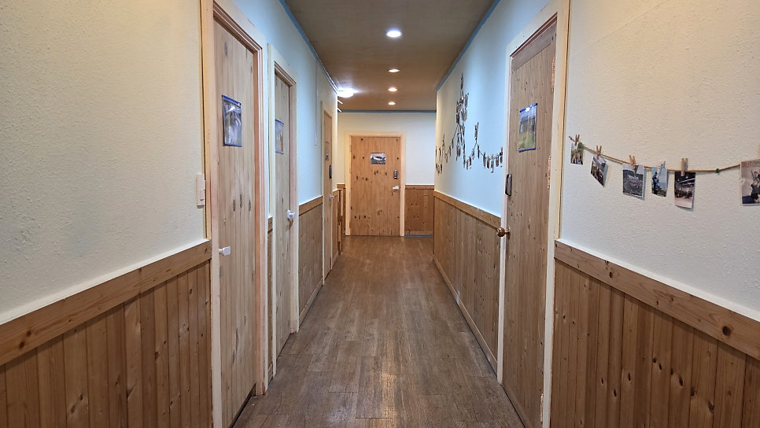
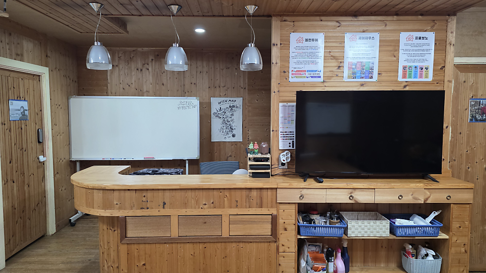
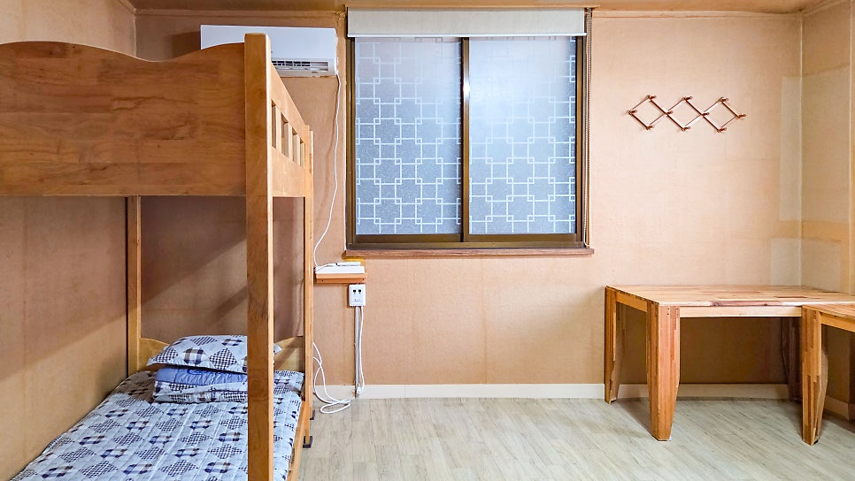
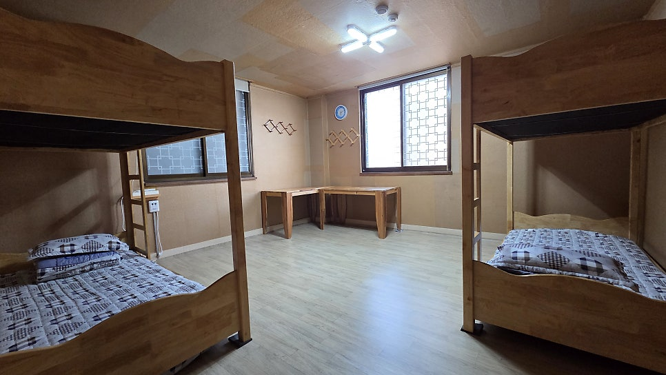
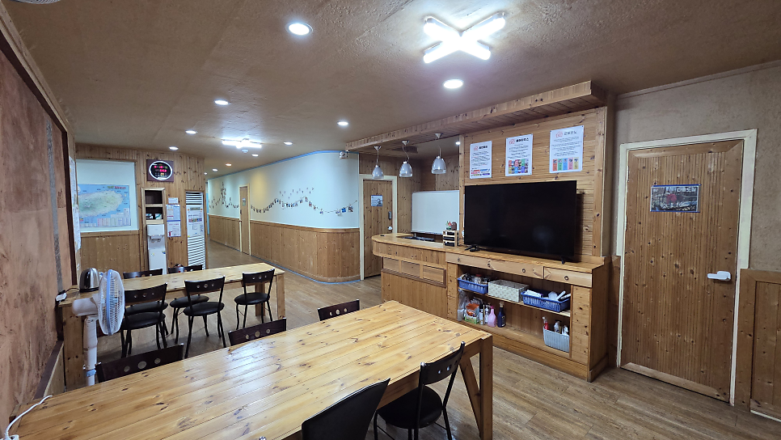

개인 프라이버시
1인실
월 45만 원침대 · 원목 데스크 · 개인 사물함 · 에어컨
지치고 아픈 마음이 쉬어가는 제주시 도심 속 조용한 집.
제주공항에서 10분, 차 없이도 편안한 한 달을 시작하세요.


공용 라운지
아늑한 객실
렌터카 없이도 제주공항에서 택시로 10분이면 도착합니다.
건물 1층에 약국·편의점·식당이 자리해 차 없이도 하루가 편안합니다.
한 달에 한 번만 계산하는 정직한 요금입니다.
공과금이 포함된 관리비는 월 3~4만 원이며,
보증금은 한 달 방값 기준으로 퇴실 시 반환됩니다.
침대 · 원목 데스크 · 개인 사물함 · 에어컨

우정 · 배낭여행원목 2층침대 · 코너 테이블 · 6칸 락커

밤 10시까지 운영공용주방 · 세탁기 · 서재 · 남녀분리 샤워실
한달살기 짐 부담을 덜어드리기 위해 필수 가구와
주방·세탁 시설을 모두 갖추고 있습니다.
서로의 쉼을 존중하는 기본 에티켓으로
언제나 고요하고 쾌적한 집을 유지합니다.
원목 침대 · 침구류 일체 · 개인 사물함 · 책상 · 에어컨
고속 Wi-Fi · 공용주방(식기·조리도구) · 세탁기 · 정수기
개인 세면도구(칫솔·치약·수건) · 개인 물품 및 상비약
필요한 생필품과 약은 건물 1층 편의점·약국에서 바로 구매 가능
공용 라운지는 밤 10시(22:00)까지만 운영하며
음주 파티 없이 밤에는 모두가 조용히 쉴 수 있도록 합니다.
전 객실 및 실내 절대 금연이며 음식물은 주방에서 취식합니다.
입실 시간 15:00~22:00 · 퇴실 시간 11:00
제주시 서광로 219 (삼도일동) 중심 생활권입니다.
렌터카 없이도 건물 1층의 편의시설부터 해안 산책로까지
도보와 대중교통으로 여유롭게 연결됩니다.
건물 1층에 GS25 편의점과 약국이 있어
늦은 밤이나 첫날에도 생필품을 바로 구매합니다.
제주공항(332·315·331번) 노선은 물론
제주 바다와 오름 어디든 버스로 이동합니다.
도민들이 찾는 동네 식당과 의원, 마트가 밀집해
차 없이도 한 달 생활에 불편함이 없습니다.
저녁 산책하기 좋은 탑동 해안산책로와
동문재래시장이 가까워 제주 일상을 누립니다.
무거운 짐을 내려놓고 도보로 다녀올 수 있는 현지인 검증 식당입니다.
카드를 클릭하면 블로그의 상세 메뉴와 위치를 볼 수 있습니다.
2014년부터 제주시 서광로에서 많은 여행자와 청년, 가족분들이
지친 마음을 내려놓고 다시 일상으로 돌아갈 힘을 얻어갔습니다.
"외곽 바다 앞 숙소에 갔을 땐 렌터카와 숙소비 때문에
쉬러 가서 더 지쳤는데, 여기는 공항에서 10분 거리라
도착한 첫날부터 건물 1층의 편의점과 약국을
바로 이용할 수 있어 마음이 놓였습니다."
"낮에는 버스를 타고 바다나 오름에 다녀오고,
밤 10시 이후엔 파티 없이 조용한 내 방으로 돌아와
아무 방해 없이 푹 쉬었습니다. 관광객이 아니라
제주로 일상을 잠시 옮긴 사람 같았어요."
"어머님을 모시고 제주에 왔는데 매니저님이 알려주신
근처 한라식당 옥돔뭇국을 어머님이 정말 좋아하셨어요.
화려하진 않지만 소박하고 진심이 느껴지는
따뜻한 보금자리입니다."
더 궁금하신 점이나 실시간 빈방 현황은
언제든 매니저 직통 번호(070-4670-7004)로
편하게 문의해 주세요.